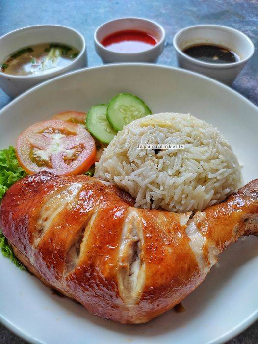

Homepage
Hainanese Chicken Recipe

Description
Hailing from the beautiful Hunan region of Eastern Asia, this plain looking poultry dish carries a complex burst of flavors in each bite. Paired with three distinct and delectable suaces, this dish is soon to become one of your home-cooked favorites!
Ingredients
- 1 Whole Chicken cut into it's respective portions
- 1 tsp Cloves
- 1 stick Cinnamon
- 2 heads of Garlic
- 2 Sweet Yellow Onions
- 1 cup Rice
- 3 tbsp of your choice of neutral oil
- 2 steps Ginger-minced or sliced
- 5 stems Green Onion
- 3 Red Kashmiri Chili Peppers
Steps
- Place a deep pot on the stove under medium heat
- Coat the bottom of the pan in your neutral oil of choice and brown the cut up chicken pieces until the skin is slightly crisp. Flip pieces to make sure both sides of each piece are browned
- Add water to the pot until just the top of the chicken pieces are exposed
- Add green onion, cinnamon, clove, garlic, ginger, peppers, and onions to the point and bring to a rolling boil for 10 minutes
- Using Tongs, remove chicken pieces and set aside on a metal rack to cool and rest. Be Careful!The chicken will be very hot
- Reduce heat to simmer and add rice to the pot. The stock will act as a ‘Flavorbomb ’ for your rice.
- Cover the pot with a lid and allow rice to cook. This should take no longer than 25 min.
- Once rice appears fluffy, turn off stove and serve rice onto plate
- Slice chicken pieces to be presentalbe and plate next to the rice. It is common to add sliced vegetables as refreshing side or add color to final plate as well